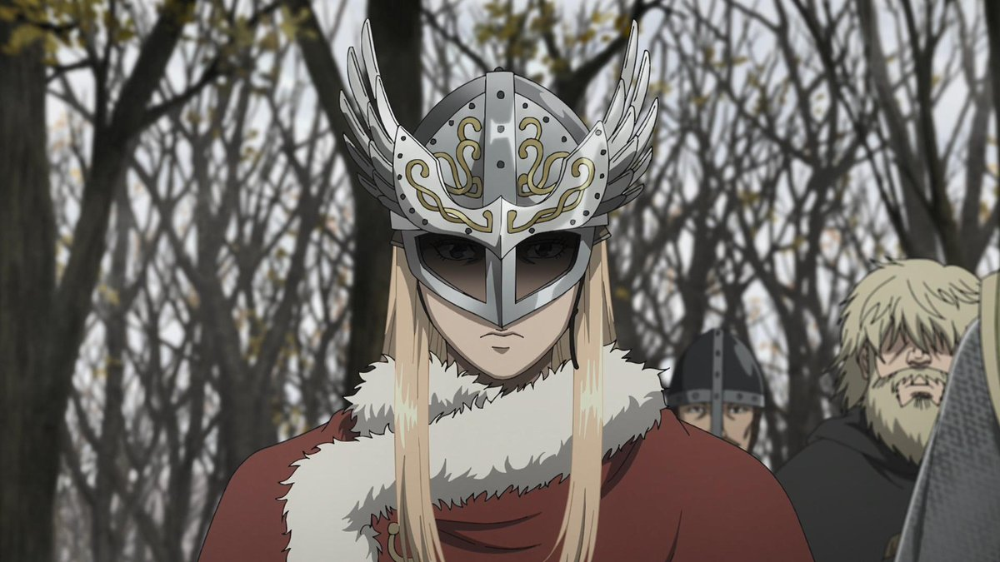
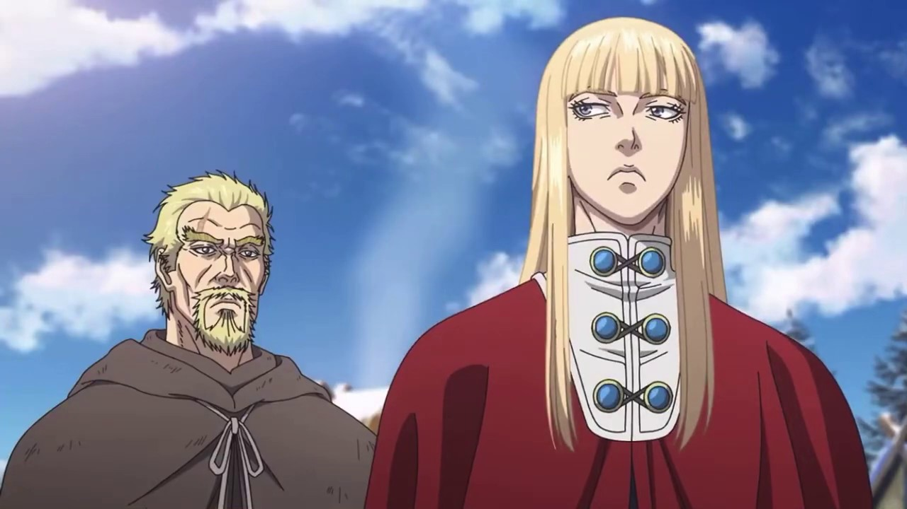
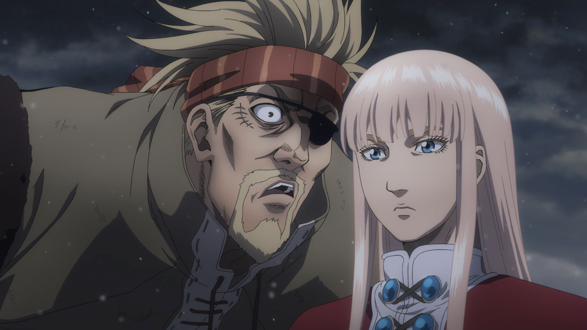

Сага о Винланде
Проведённое детство с Рагнаром очень повлияло на него, поскольку тот дал ему то, что не мог дать король Англиии - счастливое детство с отцом. Для Кнуда Рагнар является не просто советником, он ему как отец, в то время, когда настоящий считает его пропащим, бездарным и пытается избавиться от непутёвого при любом удобном случае. Благодаря Рагнару, Кнуд вырос добрым принцем, пусть плюсов от этого у него было не так уж и много. Смерть названного отца убила в нём того мальчика из детства, он сильно изменился после смерти Рагнара, стал более серьёзным и требовательным, поставив перед собой цель - сделать рай на адской земле..


